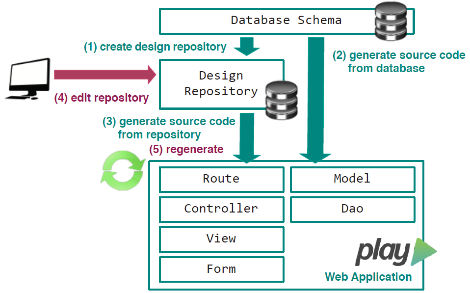
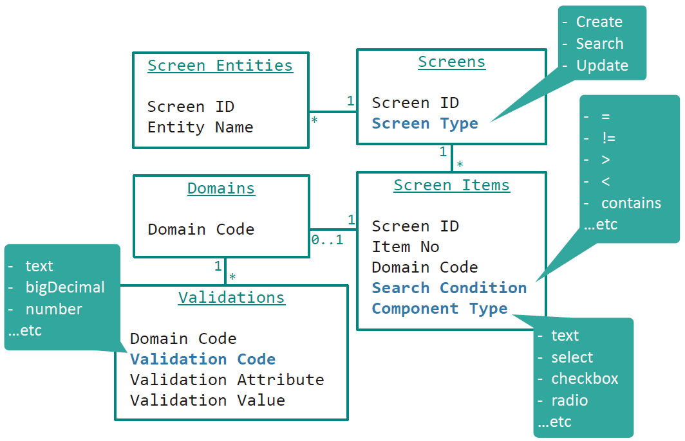
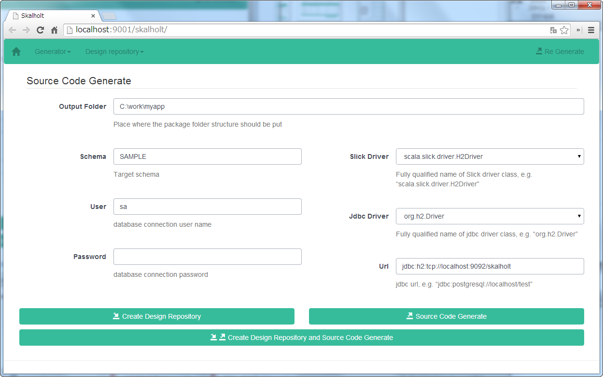
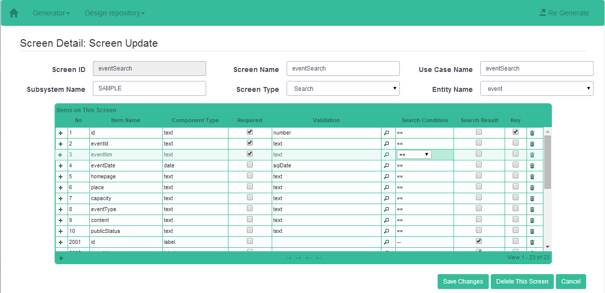
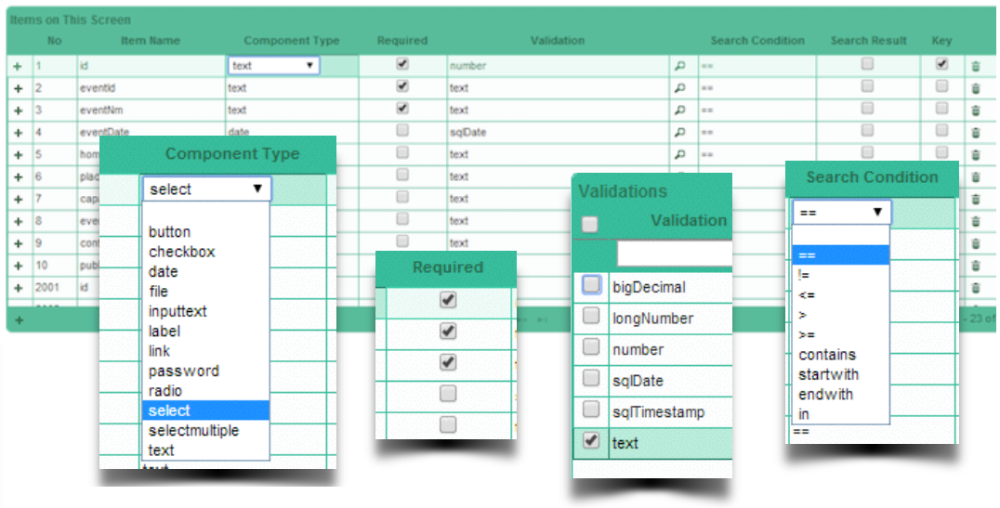

Skalholt
Scala code generator for Play Framework and Slick
What is Skalholt?
Skalholt is a source code generator which improves efficiency of web application development in Scala. It can generate source codes based on Play framework and Slick from database schema, and also it can add some additional information that is not be captured from the database schema to the source codes.
Once you prepare DB schema and execute Skalholt, then you can get simple CRUD application. Skalholt works as Web application, so you can browse and edit generated design information in design repository. With this feature, you can make the application more suitable for your needs than Scaffold.
We aim to improve the efficiency of web application development that uses Play framework and Slick, which are going to be de facto standard. Additionally, we aim to help developers who feel difficult to learn these frameworks.
Main feature
- Generate source codes based on Play Framework and Slick
- Scaffolding: i.e. generate source codes from DB schema
- Improve application by editing design information in the repository which describe application structure
- If you have installed sbt, you can use from "sbt new"
Release Note
- Feb. 23, 2015 Ver0.1.2 Bug fix and Library update
- Oct. 10, 2014 Ver0.1.1 Bug fix
- Sep. 5, 2014 Ver0.1.0 First Release
Skalholt Architecture
Skalholt is a web application template base on Play Framework. template.
The directory structure of the project cloned by github is as follows:
Skalholt-Template
+---app
| (application source codes to be developed; generated automatically by Skalholt)
+---conf
| (settings)
+---skalholt/lib
| (Skalholt libraries)
+---skalholt.h2.db
| (design repository data file; H2 Database)
\---skalholt.bat
(batch file to invoke Skalholt)
You can use Skalholt in the following steps:
1. Invoke Skalholt code generator. It will gather necessary information to generate application from business database, insert them into design repository, and generate source codes.
(1) Create design information tables in design repository
(2) Generate source codes from business (application) database
(3) Generate source codes from design repository
2. Edit contents of design repository using Skalholt web UI, and then re-generate source codes
(4) Edit the contents of design repository
(5) Re-generate source codes

The architecture of web application to be built is based on Play Framework. "Controller"s and "View"s are generated based on the contents of design repository, and "Model"s are generated base on business database schema's structure. The structure of Design repository is as follows.

Skalholt is tested with the following DBMS.
- H2Database
- PostgreSQL
How to install
All you need is sbt to use Skalholt. No other tools are needed. Please refer to "Installing sbt" about required environment and setup procedure for sbt.
How to use
Preparation
1. Create blank project
- Execute "sbt new"
C:\work>sbt new tishub/skalholt.g8 --name=myapp
C:\work>cd myapp
C:\work\myapp>sbt
[myapp] $compile
2. Prepare and invoke Database
- This template comes with an example h2 database that is already prepared for you, so please invoke H2 Database.
[myapp] $ h2-browser
Driver Class : org.h2.Driver
JDBC URL : jdbc:h2:tcp://localhost:9092/./skalholt;
User Name : sa
Password :
Design repository(schema name: GENERATOR) and sample busines database(schema name: SAMPLE) are prepared for you.
* When you use the other schema than that is already prepared, Please prepare DB schema used by application, and configure "application.conf" to connect the database.
- application.conf
db.default.driver=org.h2.Driver
db.default.url="jdbc:h2:tcp://localhost:9092/./skalholt;SCHEMA=SAMPLE"
db.default.user=sa
db.default.password=""
Please refer to Play Documentation(this link is for version 2.3) for details of settings of database connection.
3. Execute application
- Execute "run"
[myapp] $ run
Access to http://localhost:9000/
Menu has no items at this time

Generate source codes
1. Execute Skalholt. It will gather necessary information to generate application from business database, insert them into design repository, and generate source codes.
- Execute Skalholt (You have to execute in the other terminal from used executing application.)
C:\work\myapp>skalholt-ui
myapp $chmod a+x skalholt-ui
Access to http://localhost:9001/ 
Input output folder location and connection information to DB schema which is the source of code generation, and then click "Create design repository and generate source code"
Access to http://localhost:9000/
Menu have link(s) to access to generated application now.

2. Edit contents of design repository, and then re-generate source codes.
- Access to http://localhost:9001/
Choose the screen you'd like to change from "Result of Search" list

Edit screen items on "Screen Detail" 
Click "Re Generate" on the upper right corner of screen to re-generate source codes
- You can change the following behaviors of the application
- Kind of HTML component
- Validation way of screen item
- Search condition
- Input items (add/remove)

Contact
Please send feedback to us Skalholt teamsmart_dev@ml.tis.co.jp TIS Inc.
License
Skalholt is released under the Apache License version2.0.